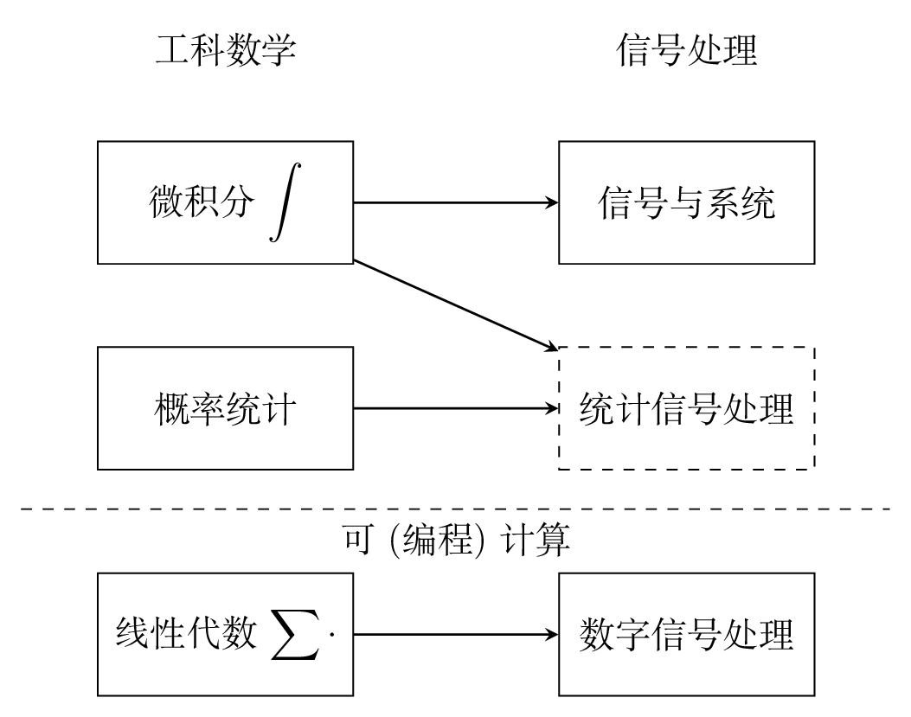

Preface
Preface#
For now, see https://chenshuo.com/data/DSP_Labs.ipynb for the notebook.
数字信号处理非常有用，近些年更有一些“出圈”的应用，比如 FFT 常作为机器学习特征提取的一种手段。 但是传统电子信息专业设置的学习路径太长，往往要先学《信号与系统》这门比较难的课， 这非常不利于非电子专业的人士自学。
我（陈硕）认为，就一般应用而言，对于非电子专业的学生，《数字信号处理》可以不必依赖于《信号与系统》， 而可以在学过基本的《线性代数》的基础上直接上手做实验。 先通过实验现象来感受数字信号处理的基本规律，有了感性认识之后，如果有进一步的需求，再去学理论。 这是因为《数字信号处理》和《线性代数》一样，是少数的“可计算 / compututable”的课程， 这里“可计算”指的是易于编程计算，知道数组和循环就可以实现大多数数字信号处理算法。 不管三七二十一，先写几行代码把公式算出个结果来，拿到结果数据，再来看它有什么道理。 甚至可以说，如果结果足够好，没道理也可以变成有道理。（此处略去两个不久以前的例子。）
1990s 初几个法国电子工程师（主要是 Claude Berrou）发明了 turbo codes。
Turbo codes were so revolutionary at the time of their introduction that many experts in the field of coding did not believe the reported results. https://en.wikipedia.org/wiki/Turbo_code#History
深度学习——眉毛胡子一把抓，乱拳打死老师傅，大力出奇迹的典范。
有人说《数字信号处理》只用加减乘，极少用到除法，对此我完全同意。 DSP 芯片也常以每秒多少次乘加（MAC）运算为性能指标，很少强调其除法性能。 《数字信号处理》里用得最多的是向量点乘向量（内积），偶尔也用矩阵乘以向量，很少用矩阵乘以矩阵。 用 computer science 的话来说，涉及最多的是 BLAS 1，偶尔用到 BLAS 2，几乎用不到 BLAS 3。

《数字信号处理》主要使用的数学工具是复数乘法和求和，这是高中生就已经掌握的技能。 一个学过几节编程课的人，拿到 DFT 的定义式，就可以照着写出实现代码，无非是两层嵌套循环，对乘积求和罢了。 （当然这种 naive 实现不高效，实践中一般也不会有人真这么实现。） 而《信号与系统》要用微积分，这成了很多人的拦路虎，毕竟算积分基本得靠人脑。
另外，我感觉传统的《数字信号处理》教材的内容编排也不利于快速自学。 夸张一点说，就好比我想学开汽车。现在 5、6 岁的小朋友在游乐场就可以开动玩具电瓶车。 而我拿到的驾驶课本甚至不是从内燃机原理讲起，而是从石油的开采和提炼讲起。 这就是我读很多《数字信号处理》教材的感受：过于强调数学基础与逻辑连贯，不考虑读者的迫切应用需求， 而是
毫无重点地平铺直叙，不分轻重地陈述细节，往往在第三章以前就用无聊的细节谋杀了读者的热情。 —— 孟岩 https://blog.csdn.net/myan/article/details/5877305
我们的教材，往往是从一般讲到特殊，对此 Richard Feynman 也曾调侃数学家和物理学家的不同： Feynman-“what differs physics from mathematics”
这方面近年来有两本书做得很好：
Think DSP
我正是受《Think DSP》的启发，决定用 Python Jupyter notebook 来重做一遍基础的本科数字信号处理实验。 为了让人可以直观感受，主要是对音频进行数字信号处理。
按《》的说法，数字信号处理有两大基本任务：
滤波 filtering
频率分析 frequency analysis
所谓滤波，指的是输入是啥信号，输出也是同类的信号，但往往去掉了输入信号的某些频率成分。 比如输入是一段语音，滤波之后的输出也是一段语音，但是消除了某个特定频率的噪音。
而频率分析则不一样，它输出的不是原来，而是告诉我们输入信号包含哪些频率成分，在某个频率的信号强度是多少。 比如输入是弹某一个钢琴琴键发出的声音，输出是告诉我们刚才弹的是键盘上的哪一个音。 更复杂一点，同时弹三个音 triad，让你找出这是哪个 chord，C-E-G 还是 C-F-A。 这对于受过音乐训练的人来说是基本的听音练习，而我们数字信号处理是让计算机也能做到这一点。
频率分析
进阶